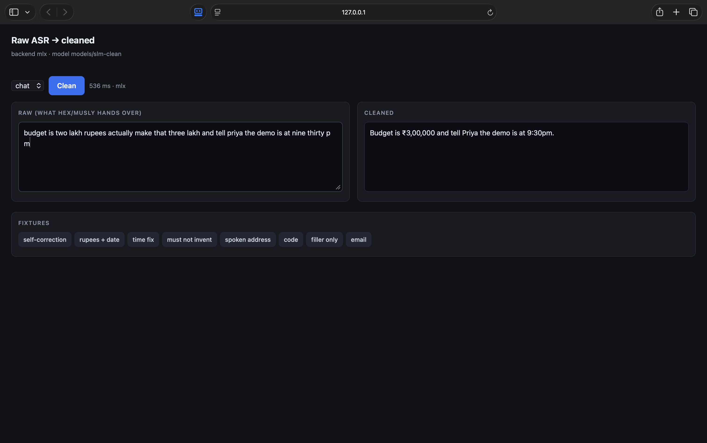
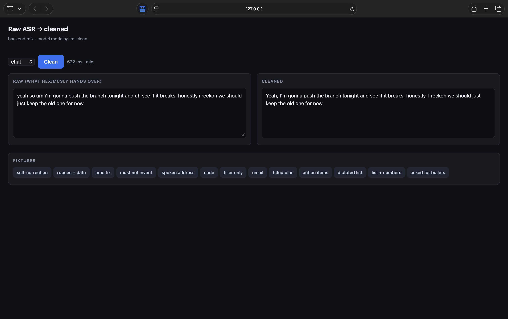
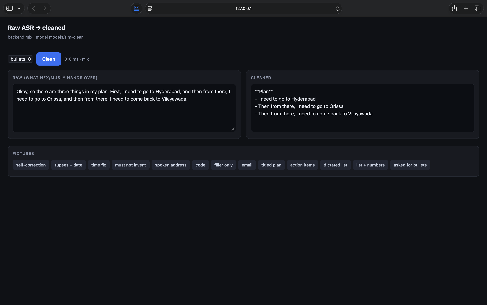

Hold a hotkey, speak, paste. A 0.6B model on this machine strips the ums, keeps the correction, and leaves your words alone. No cloud. No API key.
Apple Silicon Mac · ~424 MB cleaner on first run · unzip, then double-click Install.



Septa is Hex with the cleaner wired in. Global hotkey, on-device Whisper or Parakeet, then the local model before paste. Quit Hex once you switch.
Hex itself is macOS-only, so the Windows download is the sidecar: same 0.6B GGUF, same POST /v1/clean, same browser UI. Paste a messy transcript, get the cleaned one. First run fetches llama.cpp and the model.
Septa-windows.zip and run Install Septa.bat. Python 3.10+ needed.